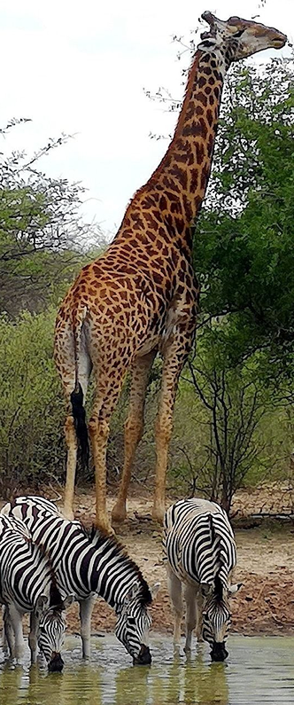

A competição é uma relação ecológica que ocorre entre organismos da mesma espécie
ou de espécies diferentes. Dizemos que a competição é intraespecífica quando indivíduos
da mesma espécie estão envolvidos, e que é interespecífica quando se trata de espécies
diferentes.
No caso de uma competição intraespecífica, os indivíduos podem “lutar” entre
si para conseguir água, alimento, luz, abrigo ou até mesmo uma parceira. São diversas as
espécies de animais em que os machos literalmente brigam entre si para conseguir acasalar.
Nesses casos, o vencedor da luta ganha o direito de reproduzir-se. Vale destacar que não
são apenas os animais que competem por recursos, as plantas, por exemplo, podem também
sofrer com a competição.
Vale destacar que não são apenas os animais que competem por recursos, as plantas, por exemplo,
podem também sofrer com a competição. Alguns vegetais quando estão muito próximos uns dos outros
podem competir pela água ou até mesmo por luz. Sendo assim, às vezes, é necessária certa distância
para que os indivíduos consigam sobreviver. Quando a competição é interespecífica, as espécies estão
competindo pelos recursos, tais como água e alimento. Nesse caso, ambas as espécies possuem os
mesmos hábitos alimentares e necessitam do mesmo recurso. Como falamos de espécies diferentes, não há
briga por parceiras sexuais. Imagine a savana africana com sua grande quantidade de zebras e gnus,
ambas as espécies são herbívoras e, portanto, competem pelo mesmo recurso